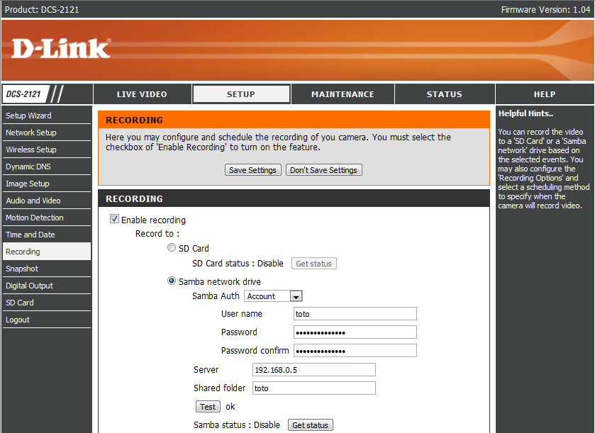
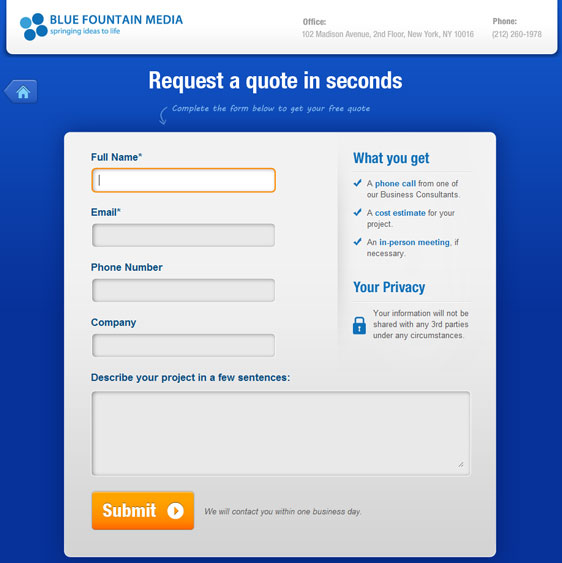

DADA2026:7
Defence against the Dark Arts
Seventh topic - Web applications [H9]
July, 2026
Look what is above the pretty table...

Accessing an embedded system


Normally you get only limited access to the system, but on one page you can enter usernames and passwords for remote mounting a file system:
A web application injection...

In this scenario, the web server queries a local database server based on a client query. In the example, the client wants to look for records associated with the userName string “hugh”.
The system architecture seems innocuous, but... (SQLi) [i8]
You access a remote web site, and fill in a form asking for particular information from a database. For example - getting information on a particular user, or a particular product.
The way this normally works is that you type in a substring in a web form, and this substring is used to build a new string which is a (SQL) query to a database.


Unfortunately, sometimes it is possible to craft a substring containing SQL commands that can do different things from what the developer of the web site intended. As a result...
The attacker may gain access to (supposedly) secret data and may be able to change/manipulate the secret data.
Technique of crafting special substrings with SQL commands is called the “
SQL injection attack ”.
The result is BAD...

The attacker makes up a userName string which has extra stuff in it. This extra stuff may do something malicious when it gets to the database server.
NUS attacks

Firstly - it was not NUS, but a departmental web server at NUS that was hacked. The hackers got irritated by a message on the web site, and made it a mission to hack it.
The attack was a SQL injection attack, which allowed them to download usercode/password hash entries stored in the SQL database attached to the web server.
What can be done? [1]
Kristy Swanson explains about SQL injections.

Clickjacking [5]
Semantics explains ClickJacking.

It is needed, and is NOT hacking!

(OWASP)
Security hackers are people skilled in IT who use non-standard means (bugs/errors) to break into computer systems and access data which would otherwise be inaccessible to them.
By contrast pen-testing is a professional activity where authorized teams, paid for by the target companies, evaluate the security of a precisely scoped-out system. In order to do this, they may very well use hacking. In the end they help you remediate issues.
Who needs pen-testing?

From MAS, “Technology Risk Management Guidelines”, we have guidance for Financial Institutions:
- 9.4.1 Vulnerability assessment (VA) is the process of identifying, assessing and discovering security vulnerabilities in a system. The FI should conduct VAs regularly...
- 9.4.4 The FI should carry out penetration tests in order to conduct an in-depth evaluation of the security posture of the system through simulations of actual attacks on the system. The FI should conduct penetration tests on internet-facing systems at least annually.
Pen-tester pre-engagement [X,ctrl-i6]

|
Pen-testers write reports for remediation
 |